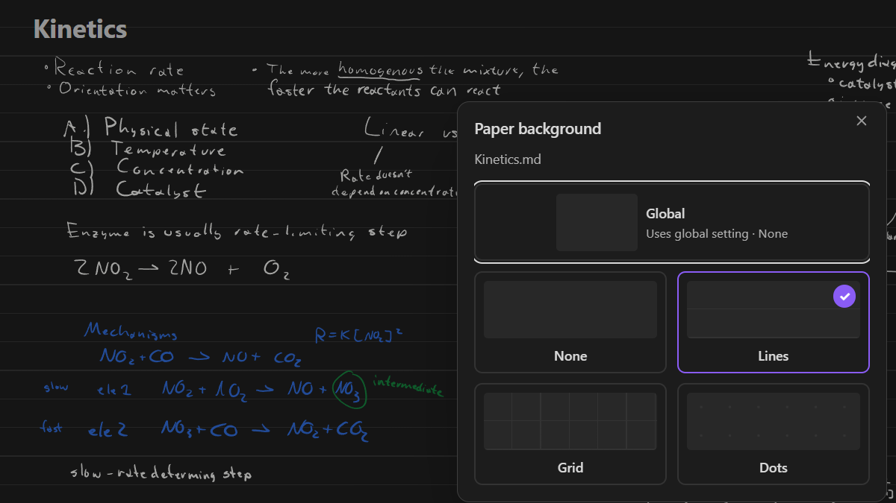
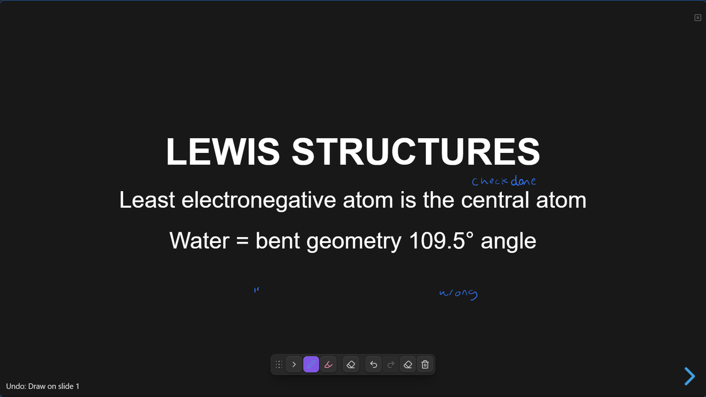

Write on a PDF
Highlight and write on the PDF itself.
Handwrite, draw, highlight, and erase directly on your notes and PDFs.
Your notes stay Markdown.
a quality plugin... really head and shoulders above everyone else who's tried something like this. it's really great.
starkruzrReddit
… It's absolutely the plugin in Obsidian with the best handwriting feel, even comparable to dedicated handwriting note-taking apps on the iPad.
@gatsbyleonardo1330YouTube
THIS! THIS IS WHAT I NEEDED!!! AMAZING WORK!
ExtensionPea4869Reddit
… the flatten command pops out a nice clean pdf with my handwritten notes exactly as I drew them. This is super impressive...
DrouxReddit
Thank YOU!!! This plugin changed the way I take notes at school, you are the goat.
ZoeGR14GitHub
… being able to write/draw in the same default Obsidian canvas while keeping regular .md files is huge.
Unopened5-Pajamas2-WGitHub
This is literally THE feature i was hoping to see in obsidian for learning coz i draw my notes - thank you!
just-a-growing-treeReddit
Same toolbar, same tools.
Highlight and write on the PDF itself.
Flatten to a copy with your ink drawn in so you can open it in any PDF app.
Snip part of the page and paste it into a note. The snip links back to the PDF page.
Write and type on the same note.
Write with your pen under the text you typed. Then highlight a phrase. You write and type on the same note.
Lasso ink next to a line of text. Tap the link button. The ink now moves with that text when you type above it.
Lasso ink to move it, resize or rotate it, delete it, or paste it into another note.
Hold the pen still at the end of a stroke and it'll snap into a line, arrow, circle, rectangle, star or other shape. Keep the pen down and move it to resize and rotate it.
Press on a line and drag down. Everything below moves with your pen.
Zoom out and keep writing past the edge. Fit brings all your ink back on screen.
Drag sideways

Lined, grid or dotsOne paper for the whole vault, or a different one for each note. Toolbar
where you want itDrag it to any of nine spots, or
collapse it.
Toolbar
where you want itDrag it to any of nine spots, or
collapse it.
Ink on slidesDraw on your slides while you present. Ink works in embedsEmbed a note and its ink shows
up too.
Ink works in embedsEmbed a note and its ink shows
up too.Ink never goes into the note. It lives in its own file,
in a .handwriting folder in your vault.
The note gets one hidden property: the id of that file. Rename or move the note and the ink follows. Turn the plugin off and the note reads like any other Markdown.
Open a note and write. Handwriting is free.
Runs on Windows, macOS, Linux, iPad, BOOX and Android.
Export your notes as PDFs, put them in your vault, and keep writing on them.
Then put the PDF in your vault and open it in Obsidian. Write on it with the same toolbar you use on notes. Highlight, erase and lasso work there too.
Your old handwriting comes in as part of the PDF page. You can write over it and next to it. The eraser won't erase imported ink, for now.
New ink is saved in the .handwriting folder in your vault.
To send a PDF back out with your ink on it, run “Handwriting: Flatten
ink into a copy of this PDF”.
This is amazing... I wanted to switch to obsidian and tried excalidraw in class and just was not it. I downloaded this, touched my pen to my screen and instanly ink.
Natural_Reputation42Reddit
incredible ! I never thought anything like this was possible in Obsidian. WOW. It's very Onenote like.
SunkTheBirdieReddit
… the way ink stays out of the Markdown but still feels glued to the note is really clever.
ahmed-rezk-devGitHub
Alan - really appreciate the work you put into this plugin, it's completely elevated my productivity workflow.
desimpkinsGitHub
I use it every day for lecture notes on Mac, iPad and a Galaxy Tab.
woominKOGitHub
This plugin is something I've needed for a long time.
morinibhGitHub
… this is definitely the one that supports my stylus best.
Davidekiller1999GitHub
I was testing this out on windows with a graphic tablet. This is amazing.
TeddysorousReddit
Finally I can handwrite things wherever I want! Thanks dev who made this :)
Key_Conversation5277Reddit
This is just incredible, hands down the best method to seamlessly merge handwriting and typing in obsidian. I'm just at a loss for words, thank you very much. You're just incredible!
@baonguyen1416YouTube
Yes.
Disable the plugin and your text stays exactly the same; the ink just stops rendering. Your notes stay .md. The only thing ever written into one is a single handwriting-page-id line in the properties.
A note you never inked on is never modified. A note you have inked on gets one line in its properties: handwriting-page-id. Nothing else. This is the same method Excalidraw and several other ink plugins use; they mark their notes with a property line the same way. Your ink lives in its own file in .handwriting/ at your vault root.
Yes. Your ink lives in a file inside your vault, so it syncs along with your notes.
If you use Obsidian Sync, iCloud, or Dropbox to sync your notes, you may have to Turn on a compatibility option in Handwriting settings as those services do not sync hidden folders by default.
I have tried very hard to make it look the same. A phone will wrap a paragraph into more lines than the desktop screen does, meaning the text will wrap. Ink you drew will always stay at its spot on the page. Do you see the problem?
The solution to this in the short term is the lasso and attach ink to text feature; ink attached to text will then be spatially positioned according to that text.
To attach ink: lasso the ink next to the text; tap the link button on the selection. You may also select attached ink with your finger.
Yes. Open the PDF in Obsidian and write on it with the same toolbar you use on notes. Highlight, erase and lasso work there too.
Yes. On iPad, turn Scribble off first: iPad Settings > Apple Pencil > Scribble > Off.
Yes. Run the command “Handwriting: Flatten ink into a copy of this PDF”. It draws your ink into a copy that opens in any PDF app.
Yes. Snip part of the page and paste it into a note. The snip links back to the PDF page.
iPad, Android, BOOX, Windows, Mac and Linux.
Yes.
Thank you for using my plugin.